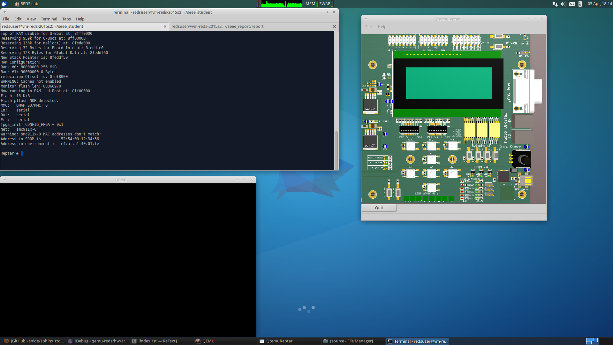
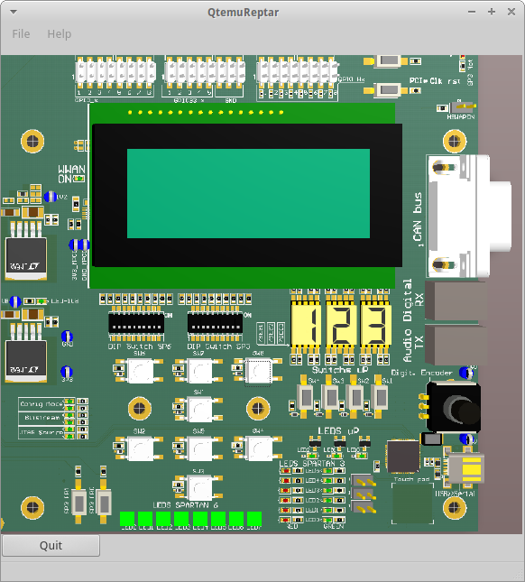

Periferal Emulations¶
In this lab, we study how to intergrate new perfiferal into the QEMU emulator. We will register a new periferal that emulate part of the FPGA that is present on the readl Reptar hardware.
QEMU environment and repatar machine¶
This part is an handover of the QEMU envionment provided for the lab. First part try to run the qtemu witch is the frontend to the QEMU and reptar emulation. To start QEMU and the qtemu togeter, we can can run the stq script:
redsuser@vm-reds-2015s2:~/seee_student$ ./stq
libGL error: pci id for fd 12: 80ee:beef, driver (null)
libGL error: core dri or dri2 extension not found
libGL error: failed to load driver: vboxvideo
Running QEMU
WARNING: Image format was not specified for 'filesystem/flash' and probing guessed raw.
Automatically detecting the format is dangerous for raw images, write operations on block 0 will be restricted.
Specify the 'raw' format explicitly to remove the restrictions.
WARNING: Image format was not specified for 'filesystem/sd-card.img' and probing guessed raw.
Automatically detecting the format is dangerous for raw images, write operations on block 0 will be restricted.
Specify the 'raw' format explicitly to remove the restrictions.
reptar-sp6-emul: sp6_emul_init
U-Boot 2011.09-00000-g9af6a15 (Feb 10 2015 - 16:10:59)
U-Boot code: 80008000 -> 80065570 BSS: -> 800F7C68
OMAP35XX-GP ES3.1, CPU-OPP2, L3-165MHz, Max CPU Clock 600 mHz
REPTAR Board + LPDDR/NAND
I2C: ready
monitor len: 000EFC68
ramsize: 10000000
TLB table at: 8fff0000
Top of RAM usable for U-Boot at: 8fff0000
Reserving 959k for U-Boot at: 8ff00000
Reserving 136k for malloc() at: 8fede000
Reserving 32 Bytes for Board Info at: 8feddfe0
Reserving 128 Bytes for Global Data at: 8feddf60
New Stack Pointer is: 8feddf50
RAM Configuration:
Bank #0: 80000000 256 MiB
Bank #1: 90000000 0 Bytes
relocation Offset is: 0fef8000
WARNING: Caches not enabled
monitor flash len: 00066970
Now running in RAM - U-Boot at: 8ff00000
Flash: 16 KiB
Flash pflash NOR detected.
MMC: OMAP SD/MMC: 0
In: serial
Out: serial
Err: serial
fpga_init: CONFIG_FPGA = 0x1
Net: smc911x-0
Warning: smc911x-0 MAC addresses don't match:
Address in SROM is 52:54:00:12:34:56
Address in environment is e4:af:a1:40:01:fe
Reptar #
We can see that we reach the U-Boot prompt. We end up with the following environement:

The QEMU windows (black container) represents the Reptar LCD screen. On the right, the frontend that represent the Reptar hardware. We can see that we have U-Boot prompt ready in the terminal window.
We can re-compile by hand the QUEM:
redsuser@vm-reds-2015s2:~/seee_student$ cd qemu-reds/
redsuser@vm-reds-2015s2:~/seee_student/qemu-reds$ ./configure --target-list=arm-softmmu --enable-debug --disable-attr --disable-docs; make -j 3
redsuser@vm-reds-2015s2:~/seee_student/qemu-reds$ make
...
...
LINK arm-softmmu/qemu-system-arm
make[1]: Leaving directory `/home/redsuser/seee_student/qemu-reds'
Spartan 6 FPGA Emulation¶
In this part, we will implement the Spartan 6 FPGA handler in QEMU. We will map its physical address space (but still emulated) to callback functions. There will be a callback for the read and one for the write.
The program flow is the following:
- Register the periferal type
- In the board init function, create the periferal and connect it to the owner (SYS bus) and set the base address.
- In the periferal initialisation function, register the callbacks and declare the registers.
- Attache the register to the SYS bus.
The declaration of the periferal is the following:
// Declare the Spartan 6 periferal
static const TypeInfo reptar_sp6_info = {
.name = "reptar_sp6", // Name use for reference/creation
.parent = TYPE_SYS_BUS_DEVICE, // This device belong to the SYS BUS
.instance_size = sizeof(sp6_state_t), // Declare the memory needed (for dynamic alocation ?)
.instance_init = sp6_init, // Declare instance intialization callback (instance constructor)
.class_init = sp6_class_init, // Declare class(static) initialization callback (class constructor)
};
static void sp6_register_types(void)
{
// Register the periferal type
type_register(&reptar_sp6_info);
}
// Magic tricks that will make sp6_reister_types() to be called.
type_init(sp6_register_types)
The reptar_sp6_info structure names the periferal. This name will be used in the Reptar initialization function to intialize the periferal:
static void reptar_init(MachineState *machine)
{
...
// Addd the Spartan 6 to the SYS BUS
s->sp6 = sysbus_create_simple("reptar_sp6", 0x18000000, NULL);
}
The above code adds the Spartan 6 periferal of type “reptar_sp6” to the system bus at base address 0x18000000.
The reptar_sp6_info structure also poins to two functions, sp6_init() and sp6_class_init().
The sp6_init() is the instance initialization function. For now, we keep it empty:
static void sp6_init(Object *obj)
{
printf("sp6_init()\n");
}
The sp6_class_init() is the class initialization function. All it does is to reference another callback function, sp6_initfn() that will be called when the class is first referenced:
static void sp6_class_init(ObjectClass* this, void* data)
{
SysBusDeviceClass* k = SYS_BUS_DEVICE_CLASS(this);
printf("sp6_class_init()\n");
k->init = sp6_initfn;
}
To be clear, the sp6_class_init()` function will be called at the QEMU startup. ``sp6_init() and sp6_initfn() will be called when adding the periferal to the system bus after the sysbus_create_simple() call.
The sp6_initfn() will initialze the communiction with the front-end, intialize the memory region and the callbacks and map the memory region to the device:
static int sp6_initfn(SysBusDevice *dev)
{
printf("sp6_initfn()\n");
// Initialze the comunication with the graphics front-end
sp6_emul_init();
// Initialize an IO memeory range, and affect call back functions
memory_region_init_io(&sp6_mem_reg, OBJECT(dev), &sp6_ops, sp6_reg_state, "SP6", 16*1024*1024);
// Declare the memory on the system bus.
sysbus_init_mmio(dev, &sp6_mem_reg);
return 0;
}
The memory_region_init_io() reference the sp6_ops structure. This is a global static structure containing the pointer to the read & write callbacks (It also define device endianness):
// Declare read & write call-back for the Spartan6 Register address
static const MemoryRegionOps sp6_ops = {
.read = sp6_read,
.write = sp6_write,
.endianness = DEVICE_NATIVE_ENDIAN,
};
The read & write callback functions should be written, so they can be referenced by the above structure. For now, they just print that they are called so we can test our empty periferal:
static uint64_t sp6_read(void *opaque, hwaddr addr, unsigned size)
{
printf("sp6_read(%x, %x, %x)\n", (int)opaque, (uint64_t)addr, size);
return 0;
}
static void sp6_write(void *opaque, hwaddr addr, uint64_t data, unsigned size)
{
printf("sp6_write(%x, %x, %x, %x)\n", (int)opaque, (uint64_t)addr, (int)data, size);
}
We can re-comile QEMU and run it. We can see during the startup that the defined callback function are called before entering U-Boot:
Reptar # redsuser@vm-reds-2015s2:~/seee_student$ ./stq
libGL error: pci id for fd 12: 80ee:beef, driver (null)
libGL error: core dri or dri2 extension not found
libGL error: failed to load driver: vboxvideo
Running QEMU
sp6_class_init()
WARNING: Image format was not specified for 'filesystem/flash' and probing guessed raw.
Automatically detecting the format is dangerous for raw images, write operations on block 0 will be restricted.
Specify the 'raw' format explicitly to remove the restrictions.
WARNING: Image format was not specified for 'filesystem/sd-card.img' and probing guessed raw.
Automatically detecting the format is dangerous for raw images, write operations on block 0 will be restricted.
Specify the 'raw' format explicitly to remove the restrictions.
sysbus_create_simple()
sp6_initfn()
reptar-sp6-emul: sp6_emul_init
U-Boot 2011.09-00000-g9af6a15 (Feb 10 2015 - 16:10:59)
We can test the read & write callback using the md.w and mw.w utility from UBoot. Those function repectively read and write a 32 bit word from the memory.
Test Read of read at 0x18000000
Reptar # md.w 0x18000000 1
18000000:sp6_read(881920, 0, 2)
0000 ..
We see the output of the printf() stament implemented in the sp6_read() callback.
Test Write of value “35” at address 0x18000000:
Reptar # mw.w 0x18000000 35
sp6_write(881920, 0, 35, 2)
We see the output of the printf() stament implemented in the sp6_write() callback.
LED devices emulation¶
Once the Spartan 6 periferal is created and reachable from the emulated CPU, we need to implement the periferal behavior. The first part will be the LED output. The LEDS are driven by a single register. Each bit represent a LED. The offset for this register is 0x003a.
To emulate the registers, we create a data structre as following:
typedef struct
{
// Register address
uint32_t addr;
// Register value
uint32_t value;
// Callback that will be called on write
void (*write_callback)(uint32_t value);
}
fake_reg;
This structure contains the address of the register, its address, and a pointer to callback function that will be used to do some action when the register is written. This structure is then used to construct the register map as a static array of those structure:
#define LED_REG 0x003A
#define GUARD_REG 0xFFFFFFFF
static fake_reg sp6_reg_state[] =
{
// {addr, value, write_callback}
{LED_REG, 0, leds_write},
{GUARD_REG, 0, NULL},
};
The GUARD_RED will be used to break the loop when the last element is reached. We can modify the sp6_read() so that the value of the register value is return when reading it:
static uint64_t sp6_read(void *opaque, hwaddr addr, unsigned size)
{
fake_reg* reg = (fake_reg*)opaque;
printf("sp6_read(%x, %x, %x)\n", (int)opaque, (uint64_t)addr, size);
// Look for the address, until we reach it or the guard register
while(reg->addr != addr && reg->addr != GUARD_REG)
{
reg++;
}
// If we matched the readen address to an existing register, return its value
if( reg->addr == addr)
{
return reg->value;
}
// Else, we read 0
return 0;
}
The sp6_write() function is modified in a similar way. In addition, it call the callback function if its defined:
static void sp6_write(void *opaque, hwaddr addr, uint64_t data, unsigned size)
{
printf("sp6_write(%x, %x, %x, %x)\n", (int)opaque, (uint64_t)addr, (int)data, size);
fake_reg* reg = (fake_reg*)opaque;
// Look for the register by its address, until we reach it or the guard register
while(reg->addr != addr && reg->addr != GUARD_REG)
{
reg++;
}
// If we matched the readen address to an existing register, modify it
if( reg->addr == addr)
{
reg->value = (uint32_t)data;
// If a callback is defined, call it passing the written data
if(reg->write_callback != NULL)
{
reg->write_callback((uint32_t)data);
}
}
else
{
// For debug
printf("ERROR: Register 0x%x not found!\n");
}
}
Then we need to implement the callback for the LED register. This function simply pass the value to the fontend:
void leds_write(uint32_t value)
{
printf("Led write");
// Create the JSON object containing the data
cJSON* root = cJSON_CreateObject();
cJSON_AddStringToObject(root, "perif", "led");
cJSON_AddNumberToObject(root, "value", value);
// Pass it to the front-end
sp6_emul_cmd_post(root);
}
We can then test by writing any value to the address 0x1800003A from the U-Boot prompt (again using the mw.b command:
Reptar # mw.b 0x1800003A 0xAA
sp6_write(e5a85920, 3a, aa, 1)
Led writereptar-sp6-emul: sp6_emul_cmd_post
reptar-sp6-emul: sp6_emul_cmd_post Inserting into queue...
reptar-sp6-emul: sp6_emul_cmd_post ...done
The front end then shows the patern 0xAA on the LEDs:
Button emulation¶
In this part, we are required to make the button availabe to the software. For this, a call back will modify the register values. This callback is already provided in the file reptar_sp6_button.c and is called reptar_sp6_btns_event_process().
We will need to make the register acessible to functions in reptar_sp6_button.c. For this we modified the structre provided in repstar_sp6.h to add it the register strucure:
/**
* Desrcrite an hardware register.
*/
typedef struct
{
// Register address
uint32_t addr;
// Register value
uint32_t value;
// Callback that will be called on write
void (*write_callback)(uint32_t value);
}
fake_reg;
typedef struct
{
SysBusDevice busdev;
MemoryRegion iomem;
fake_reg* regs; /* 1KB (512 * 16bits registers) register map */
qemu_irq irq;
int irq_pending;
int irq_enabled;
} sp6_state_t;
We need then to intialize a such structure in reptar_sp6.c:
static fake_reg sp6_reg_state[] =
{
// {addr, value, write_callback}
{PUSH_BUT_REG, 0, NULL},
{LED_REG, 0, leds_write},
{GUARD_REG, 0, 0},
};
static sp6_state_t sp6_state = {.regs=sp6_reg_state};
Note that we added one register for the push button.
In the p6_init_fn() we need to tell the button handler module reptar_sp6_buttons.c where to find this structure:
// Tell the button driver where to find the device state.
reptar_sp6_btns_init(&sp6_state);
We can add some code in the reptar_sp6_btns_event_process() callback to modifiy the register value when a button is pressed:
int reptar_sp6_btns_event_process(cJSON * object)
{
//printf("reptar_sp6_btns_event_process()\n");
char* perif_name = cJSON_GetObjectItem(object, "perid")->valuestring;
if(strcmp(perif_name, "btn") == 0)
{
// Find the button register
fake_reg* reg = sp6_state->regs;
while(reg->addr != PUSH_BUT_REG && reg->addr != GUARD_REG)
{
reg++;
}
// Modify it if it was found
if(reg->addr == PUSH_BUT_REG)
{
reg->value = cJSON_GetObjectItem(object, "status")->valueint;;
}
}
cJSON_Delete(object);
return 0;
}
A small program is available to test the button functionality. We can compile it and make it avaialbe to the emulator and U-Boot using TFTP:
redsuser@vm-reds-2015s2:~/seee_student$ cd sp6_buttons_u-boot/
redsuser@vm-reds-2015s2:~/seee_student/sp6_buttons_u-boot$ make
arm-linux-gnueabihf-gcc -g -O0 -fno-common -ffixed-r8 -msoft-float -D__KERNEL__ -DCONFIG_SYS_TEXT_BASE=0x80008000 -Iinclude -fno-builtin -ffreestanding -nostdinc -isystem /opt/linaro-arm-linux-gnueabihf/bin/../lib/gcc/arm-linux-gnueabihf/4.7.3/include -pipe -DCONFIG_ARM -D__ARM__ -marm -mabi=aapcs-linux -mno-thumb-interwork -march=armv5 -Wall -Wstrict-prototypes -c -o stubs.o stubs.c
arm-linux-gnueabihf-gcc -g -O0 -fno-common -ffixed-r8 -msoft-float -D__KERNEL__ -DCONFIG_SYS_TEXT_BASE=0x80008000 -Iinclude -fno-builtin -ffreestanding -nostdinc -isystem /opt/linaro-arm-linux-gnueabihf/bin/../lib/gcc/arm-linux-gnueabihf/4.7.3/include -pipe -DCONFIG_ARM -D__ARM__ -marm -mabi=aapcs-linux -mno-thumb-interwork -march=armv5 -Wall -Wstrict-prototypes -c -o board.o board.c
arm-linux-gnueabihf-ar crv libstubs.a stubs.o board.o
a - stubs.o
a - board.o
arm-linux-gnueabihf-gcc -g -O0 -fno-common -ffixed-r8 -msoft-float -D__KERNEL__ -DCONFIG_SYS_TEXT_BASE=0x80008000 -Iinclude -fno-builtin -ffreestanding -nostdinc -isystem /opt/linaro-arm-linux-gnueabihf/bin/../lib/gcc/arm-linux-gnueabihf/4.7.3/include -pipe -DCONFIG_ARM -D__ARM__ -marm -mabi=aapcs-linux -mno-thumb-interwork -march=armv5 -Wall -Wstrict-prototypes -c -o sp6_buttons.o sp6_buttons.c
arm-linux-gnueabihf-ld -g -Ttext 0x81600000 \
-o sp6_buttons sp6_buttons.o stubs.o board.o \
-L/opt/linaro-arm-linux-gnueabihf/bin/../lib/gcc/arm-linux-gnueabihf/4.7.3 -lgcc
arm-linux-gnueabihf-ld: warning: cannot find entry symbol _start; defaulting to 81600000
arm-linux-gnueabihf-objcopy -O binary sp6_buttons sp6_buttons.bin 2>/dev/null
redsuser@vm-reds-2015s2:~/seee_student/sp6_buttons_u-boot$ cp sp6_buttons ../../tftpboot
We can then run it from the emulator:
Reptar # run tftp3
smc911x: detected LAN9118 controller
smc911x: phy initialized
smc911x: MAC e4:af:a1:40:01:fe
Using smc911x-0 device
TFTP from server 10.0.2.2; our IP address is 10.0.2.10
Filename 'sp6_buttons_u-boot/sp6_buttons.bin'.
Load address: 0x81600000
Loading: #######
done
Bytes transferred = 34512 (86d0 hex)
Reptar # go 0x81600000
## Starting application at 0x81600000 ...
Start of the SP6 buttons standalone test application
...
Button LEFT pressed
Button LEFT pressed
Button LEFT pressed
Button LEFT pressed
Button LEFT pressed
Button LEFT pressed
Button LEFT pressed
Button LEFT pressed
Button LEFT pressed
...
IRQ managment with buttons¶
We will add the IRQ managment to the buttons. For this we need to tell the QUEM that our device have the ablitiy to make IRQ and request an IRQ number. For this we should add the following call to sp6_initfn():
static int sp6_initfn(SysBusDevice *dev)
{
//... (Extra code removed)
// map the IRQ
sysbus_init_irq(dev, &(sp6_state.irq));
return 0;
}
Then we need to map the IRQ to the system bus (witch goes to the CPU) in the platfrom initialization function reptar_init():
static void reptar_init(MachineState *machine)
{
//... (extra code removed
s->sp6 = sysbus_create_simple("reptar_sp6", 0x18000000, NULL);
sysbus_connect_irq(SYS_BUS_DEVICE(s->sp6), 0, qdev_get_gpio_in(s->cpu->gpio, 10));
}
We then need a new register for the IRQ control register of the FPGA. This register is at 0x0018. This register is writtabe so, it will get a write call back:
static void irq_ctl_reg_write(uint32_t value)
{
// Manage IRQ Clear
if (value & SP6_IRQ_CLEAR)
{
sp6_state.irq_pending = false;
qemu_irq_lower(sp6_state.irq);
}
// Mangae the enable
if (value & SP6_IRQ_EN)
{
sp6_state.irq_enabled = true;
}
else
{
sp6_state.irq_enabled = false;
}
}
...
static void irq_ctl_reg_write(uint32_t value);
#define IRQ_CTL_REG 0x0018
static fake_reg sp6_reg_state[] =
{
// {addr, value, write_callback}
{PUSH_BUT_REG, 0, NULL},
{IRQ_CTL_REG, 0, irq_ctl_reg_write},
{LED_REG, 0, leds_write},
{GUARD_REG, 0, 0},
};
We then need to trigger the IRQ in the button call-back if they are enable. So we add the following code to reptar_sp6_btns_event_process():
int reptar_sp6_btns_event_process(cJSON * object)
{
printf("reptar_sp6_btns_event_process()\n");
char* perif_name = cJSON_GetObjectItem(object, "perif")->valuestring;
if (perif_name == NULL)
{
printf("Unable to have perif\n");
cJSON_Delete(object);
return 0;
}
if(strcmp(perif_name, "btn") == 0)
{
int button = cJSON_GetObjectItem(object, "status")->valueint;
// ... extra code removed
// Find the IRQ CTR register
fake_reg* irq_reg = sp6_state->regs;
while(irq_reg->addr != IRQ_CTL_REG && irq_reg->addr != GUARD_REG)
{
irq_reg++;
}
// Modify it if it was found
if(irq_reg->addr == IRQ_CTL_REG)
{
if(sp6_state->irq_enabled && !sp6_state->irq_pending)
{
sp6_state->irq_pending = true;
qemu_irq_raise(sp6_state->irq);
irq_reg->value &= ~SP6_IRQ_BTNS_MASK;
irq_reg->value |= SP6_IRQ_STATUS;
irq_reg->value |= (button << 1 ) & SP6_IRQ_BTNS_MASK;
irq_reg->value &= ~SP6_IRQ_SRC_MASK;
}
}
}
cJSON_Delete(object);
return 0;
}
We can then test the IRQ. First we check the CPU IRQ status register to check that no IRQ is raised. The IPS status registers for the GPIO where the IRQ of FPGA is connected is called GPIO_IRQ_STATUS1 and is at address 0x48310018 (see DM37xx manual p. 3517). We can read this register using U-Boot:
Reptar # md.l 0x48310018 1
48310018: 00000000 ....
We check also the IRQ status register from the FPGA it-self:
Reptar # md.w 0x18000018 1
18000018: 0000 ..
We will then enable this interupt. This need to be done at CPU level and at FPGA level. For the CPU, we will write ones to the whole enable regsiters. They are two, called GPIO_RISINGDETECT and GPIO_IRQ_ENABLE1 at address 0x48310048 and 0x4831001c. The first one is to select the edge that trigger the IRQ and the second is the general enable register. We need also to enable the IRQ at FPGA level by writting the IRQ_CTL_REG at 0x18000018. For this we neet to set the 8th bit. We can do all this using the U-Boot prompt:
Reptar # mw.l 0x48310048 0xFFFFFFFF 1
Reptar # mw.l 0x4831001c 0xFFFFFFFF 1
Reptar # mw.w 0x18000018 0x0080 1
We then can check that a button press modifiy the IRQ_CTL_REG. We read it just before pressing the button:
Reptar # md.l 0x48310018 1
48310018: 00000000 ....
Reptar # md.w 0x18000018
18000018: 0080
After pressing a button:
Reptar # md.w 0x18000018
18000018: 0092 ..
Reptar # md.l 0x48310018 1
8310018: 00000400 ....
We see that the bit 4 was set in the IRQ_CTRL_REG. This bit is the IRQ_STATUS flag. It show that the IRQ is asserted at FPGA level. We see also that the bit 10 is set in the GPIO_IRQ_STATUS1 register. This should correspond to tthe mapped IRQ in the the qdev_get_gpio_in(s->cpu->gpio, 10) call in reptar_init() function.
We can check that we can clear the IRQ from the FPGA level:
Reptar # mw.w 0x18000018 0x0081 1
Reptar # md.w 0x18000018
18000018: 0080 ..
This shows that the IRQ_STATUS flag was cleared (bit 4), but IRQ_ENABLE still remains (bit 7). We need to clear also the GPIO_IRQ_STATUS1 by writing the bit again to ‘1’:
Reptar # md.l 0x48310018 1
48310018: 00000400 ....
Reptar # mw.l 0x48310018 0x00000400 1
Reptar # md.l 0x48310018 1
48310018: 00000000 ....
7 segment display emulation¶
This section is about adding the emulation of the 7 segment perfieral. Thery are 3 “Seven Segment” display connected to the FPGA. They are at address offset from 0x0030 to 0x0034 (each 16 bits). First we have to implement the register that will control the 7 segment. This goes in the same way that for the LEDs in part 3. The code is added is give here after:
//... (code removed)
#define DISP_7SEG1_REG 0x0030
#define DISP_7SEG2_REG 0x0032
#define DISP_7SEG3_REG 0x0034
//... (code removed)
static void d7seg1_reg_write(uint32_t* value_ptr);
static void d7seg2_reg_write(uint32_t* value_ptr);
static void d7seg3_reg_write(uint32_t* value_ptr);
static fake_reg sp6_reg_state[] =
{
// {addr, value, write_callback}
{PUSH_BUT_REG, 0, NULL},
{IRQ_CTL_REG, 0, irq_ctl_reg_write},
{DISP_7SEG1_REG, 0, d7seg1_reg_write},
{DISP_7SEG2_REG, 0, d7seg2_reg_write},
{DISP_7SEG3_REG, 0, d7seg3_reg_write},
{LED_REG, 0, leds_write},
{GUARD_REG, 0, 0},
};
static sp6_state_t sp6_state = {.regs=sp6_reg_state};
//... (code removed)
static void set_7seg(int n, int value)
{
printf("Writing 7seg %d to %d\n", n, value);
// Create the JSON object containing the data
cJSON* root = cJSON_CreateObject();
cJSON_AddStringToObject(root, "perif", "7seg");
cJSON_AddNumberToObject(root, "digit", n);
cJSON_AddNumberToObject(root, "value", value);
// Pass it to the front-end
sp6_emul_cmd_post(root);
}
static void d7seg1_reg_write(uint32_t* value_ptr)
{
set_7seg(1, *value_ptr);
}
static void d7seg2_reg_write(uint32_t* value_ptr)
{
set_7seg(2, *value_ptr);
}
static void d7seg3_reg_write(uint32_t* value_ptr)
{
set_7seg(3, *value_ptr);
}
//... (code removed)
We can then test the functionality by writing the register from the U-Boot prompt:
Reptar # mw.w 0x18000030 0x06
Writing 7seg 1 to 6
reptar-sp6-emul: sp6_emul_cmd_post
reptar-sp6-emul: sp6_emul_cmd_post Inserting into queue...
reptar-sp6-emul: sp6_emul_cmd_post ...done
Reptar # mw.w 0x18000032 0x5B
Writing 7seg 2 to 91
reptar-sp6-emul: sp6_emul_cmd_post
reptar-sp6-emul: sp6_emul_cmd_post Inserting into queue...
reptar-sp6-emul: sp6_emul_cmd_post ...done
Reptar # mw.w 0x18000034 0x4f
Writing 7seg 3 to 79
reptar-sp6-emul: sp6_emul_cmd_post
reptar-sp6-emul: sp6_emul_cmd_post Inserting into queue...
reptar-sp6-emul: sp6_emul_cmd_post ...done
The following code shows changes the 7 segments on the frontend:

A test application for the 7 segment is available we can compile it and make it availabe to U-boot via TFTP:
redsuser@vm-reds-2015s2:~/seee_student$ cd 7seg_u-boot/
redsuser@vm-reds-2015s2:~/seee_student/7seg_u-boot$ make
arm-linux-gnueabihf-gcc -g -O0 -fno-common -ffixed-r8 -msoft-float -D__KERNEL__ -DCONFIG_SYS_TEXT_BASE=0x80008000 -Iinclude -fno-builtin -ffreestanding -nostdinc -isystem /opt/linaro-arm-linux-gnueabihf/bin/../lib/gcc/arm-linux-gnueabihf/4.7.3/include -pipe -DCONFIG_ARM -D__ARM__ -marm -mabi=aapcs-linux -mno-thumb-interwork -march=armv5 -Wall -Wstrict-prototypes -c -o stubs.o stubs.c
arm-linux-gnueabihf-gcc -g -O0 -fno-common -ffixed-r8 -msoft-float -D__KERNEL__ -DCONFIG_SYS_TEXT_BASE=0x80008000 -Iinclude -fno-builtin -ffreestanding -nostdinc -isystem /opt/linaro-arm-linux-gnueabihf/bin/../lib/gcc/arm-linux-gnueabihf/4.7.3/include -pipe -DCONFIG_ARM -D__ARM__ -marm -mabi=aapcs-linux -mno-thumb-interwork -march=armv5 -Wall -Wstrict-prototypes -c -o 7seg.o 7seg.c
arm-linux-gnueabihf-gcc -g -O0 -fno-common -ffixed-r8 -msoft-float -D__KERNEL__ -DCONFIG_SYS_TEXT_BASE=0x80008000 -Iinclude -fno-builtin -ffreestanding -nostdinc -isystem /opt/linaro-arm-linux-gnueabihf/bin/../lib/gcc/arm-linux-gnueabihf/4.7.3/include -pipe -DCONFIG_ARM -D__ARM__ -marm -mabi=aapcs-linux -mno-thumb-interwork -march=armv5 -Wall -Wstrict-prototypes -c -o board.o board.c
arm-linux-gnueabihf-ar crv libstubs.a stubs.o 7seg.o board.o
a - stubs.o
a - 7seg.o
a - board.o
arm-linux-gnueabihf-gcc -g -O0 -fno-common -ffixed-r8 -msoft-float -D__KERNEL__ -DCONFIG_SYS_TEXT_BASE=0x80008000 -Iinclude -fno-builtin -ffreestanding -nostdinc -isystem /opt/linaro-arm-linux-gnueabihf/bin/../lib/gcc/arm-linux-gnueabihf/4.7.3/include -pipe -DCONFIG_ARM -D__ARM__ -marm -mabi=aapcs-linux -mno-thumb-interwork -march=armv5 -Wall -Wstrict-prototypes -c -o 7seg_u-boot.o 7seg_u-boot.c
arm-linux-gnueabihf-ld -g -Ttext 0x81600000 \
-o 7seg_u-boot 7seg_u-boot.o stubs.o 7seg.o board.o \
-L/opt/linaro-arm-linux-gnueabihf/bin/../lib/gcc/arm-linux-gnueabihf/4.7.3 -lgcc
arm-linux-gnueabihf-ld: warning: cannot find entry symbol _start; defaulting to 81600000
arm-linux-gnueabihf-objcopy -O binary 7seg_u-boot 7seg_u-boot.bin 2>/dev/null
redsuser@vm-reds-2015s2:~/seee_student/7seg_u-boot$ cp 7seg_u-boot ../../tftpboot
redsuser@vm-reds-2015s2:~/seee_student/7seg_u-boot$ cd ..
redsuser@vm-reds-2015s2:~/seee_student$ ./stq
We can then run it from U-Boot:
Reptar # tftp 7seg_u-boot/7seg_u-boot.bin
smc911x: detected LAN9118 controller
smc911x: phy initialized
smc911x: MAC e4:af:a1:40:01:fe
Using smc911x-0 device
TFTP from server 10.0.2.2; our IP address is 10.0.2.10
Filename '7seg_u-boot/7seg_u-boot.bin'.
Load address: 0x81600000
Loading: #######
done
Bytes transferred = 34932 (8874 hex)
Reptar # go 0x81600000
We can then observe the number on the 3 seven segment display changing in the frond-end !
Mini-application¶
The following program, uses the button to manage 3 counters that are displayed on the 7 segment displays. Button SW3 enable to quit te application:
#include <common.h>
#include <command.h>
#include <asm/arch/mux.h>
#include <asm/io.h>
#include <asm/errno.h>
#include "board/ti/reptar/reptar.h"
#define SW1 (1<<0)
#define SW2 (1<<1)
#define SW3 (1<<2)
#define SW4 (1<<3)
#define SW5 (1<<4)
extern int sevenseg_putc(int index, unsigned char number);
int old_state = 0;
int new_state =0;
int buttons(void);
void sample(void);
void latch(void);
int is_rising(unsigned int bit);
#define handle_counter(i) \
counters[i]++;\
if(counters[i] >= 10)\
{\
counters[i] = 0;\
}\
sevenseg_putc(i, counters[i]);
int main(int argc, char *argv[])
{
int counters[] = {0, 0, 0};
printf("Start of the Miniapp U-boot Standalone Application\n");
sevenseg_putc(0, 0);
sevenseg_putc(1, 0);
sevenseg_putc(2, 0);
while(1)
{
// Sample the button inputs
sample();
// Modify internal state
if( is_falling(SW2))
handle_counter(0);
if( is_falling(SW5))
handle_counter(1);
if( is_falling(SW4))
handle_counter(2);
if (is_falling(SW3))
break;
// Save input states
latch();
}
printf("Stop of the Miniapp U-boot Standalone Application\n");
return 0;
}
int buttons()
{
return readw(SP6_PUSH_BUT);
}
void sample(void)
{
new_state = buttons();
}
void latch(void)
{
old_state = new_state;
}
int is_rising(unsigned int bit)
{
return (new_state & bit) && !(old_state & bit);
}
int is_falling(unsigned int bit)
{
return !(new_state & bit) && (old_state & bit);
}
To test the application simply run:
redsuser@vm-reds-2015s2:~/seee_student$ cp miniapp_u-boot/miniapp_u-boot ~/tftpboot
redsuser@vm-reds-2015s2:~/seee_student$ ./stq
libGL error: pci id for fd 12: 80ee:beef, driver (null)
libGL error: core dri or dri2 extension not found
libGL error: failed to load driver: vboxvideo
Running QEMU
sp6_class_init()
WARNING: Image format was not specified for 'filesystem/flash' and probing guessed raw.
Automatically detecting the format is dangerous for raw images, write operations on block 0 will be restricted.
Specify the 'raw' format explicitly to remove the restrictions.
WARNING: Image format was not specified for 'filesystem/sd-card.img' and probing guessed raw.
Automatically detecting the format is dangerous for raw images, write operations on block 0 will be restricted.
Specify the 'raw' format explicitly to remove the restrictions.
sysbus_create_simple()
sp6_initfn()
U-Boot 2011.09-00000-g9af6a15 (Feb 10 2015 - 16:10:59)
U-Boot code: 80008000 -> 80065570 BSS: -> 800F7C68
OMAP35XX-GP ES3.1, CPU-OPP2, L3-165MHz, Max CPU Clock 600 mHz
REPTAR Board + LPDDR/NAND
I2C: ready
monitor len: 000EFC68
ramsize: 10000000
TLB table at: 8fff0000
Top of RAM usable for U-Boot at: 8fff0000
Reserving 959k for U-Boot at: 8ff00000
Reserving 136k for malloc() at: 8fede000
Reserving 32 Bytes for Board Info at: 8feddfe0
Reserving 128 Bytes for Global Data at: 8feddf60
New Stack Pointer is: 8feddf50
RAM Configuration:
Bank #0: 80000000 256 MiB
Bank #1: 90000000 0 Bytes
relocation Offset is: 0fef8000
WARNING: Caches not enabled
monitor flash len: 00066970
Now running in RAM - U-Boot at: 8ff00000
Flash: 16 KiB
Flash pflash NOR detected.
MMC: OMAP SD/MMC: 0
In: serial
Out: serial
Err: serial
fpga_init: CONFIG_FPGA = 0x1
Net: smc911x-0
Warning: smc911x-0 MAC addresses don't match:
Address in SROM is 52:54:00:12:34:56
Address in environment is e4:af:a1:40:01:fe
Reptar # tftp miniapp_u-boot/miniapp_u-boot.bin
smc911x: detected LAN9118 controller
smc911x: phy initialized
smc911x: MAC e4:af:a1:40:01:fe
Using smc911x-0 device
TFTP from server 10.0.2.2; our IP address is 10.0.2.10
Filename 'miniapp_u-boot/miniapp_u-boot.bin'.
Load address: 0x81600000
Loading: #######
done
Bytes transferred = 35352 (8a18 hex)
Reptar # go 0x81600000
## Starting application at 0x81600000 ...
Start of the Miniapp U-boot Standalone Application